Trước
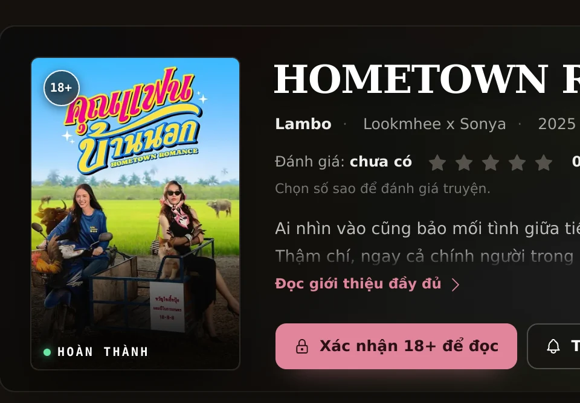
Mockup rà soát · không phải bản vẽ
Mọi ảnh dưới đây là chụp từ site thật, không phải hình minh hoạ.
Bản TRƯỚC chụp từ commit 27f7159, bản SAU chụp từ bản đang chạy
trên dev server. Cùng một truyện (Hometown Romance) để so cho công bằng.
Nhìn tổng thể trước, rồi xuống từng chỗ. Khác biệt lớn nhất: bên trái chữ nằm trên nền ảnh mờ; bên phải chữ nằm trên một mặt phẳng riêng, ảnh tách ra một cột.
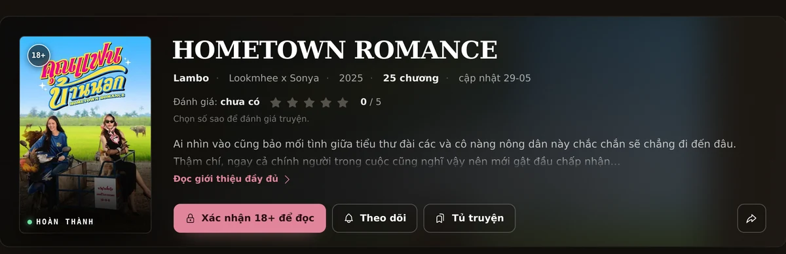
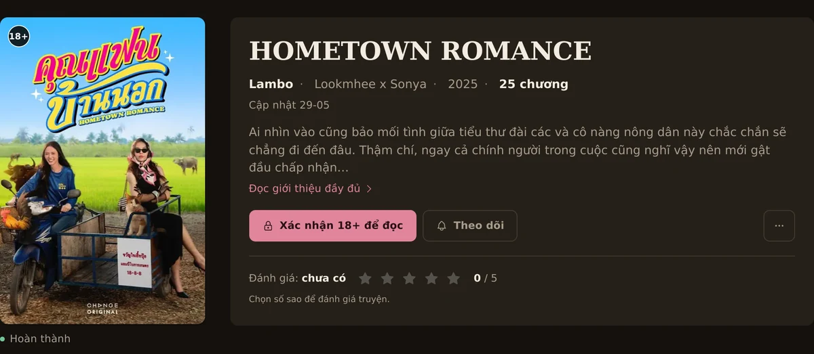
Mỗi hàng: bên trái là bản cũ, bên phải là bản mới, cắt đúng vùng đó. Hai bên trong cùng một hàng luôn được cắt cùng bề ngang nên cùng tỉ lệ phóng — chữ to ra thu nhỏ lại là thật, không phải do ảnh phóng to thu nhỏ.
Bản cũ lấy chính bìa phóng to, làm mờ 26px, phủ một lớp tối rồi
đặt chữ trắng lên trên — đó là lý do chữ chỉ đạt tương phản 1.54:1. Bản mới bỏ hẳn
nền ảnh: bìa là một cột riêng, khối chữ là một mặt phẳng.

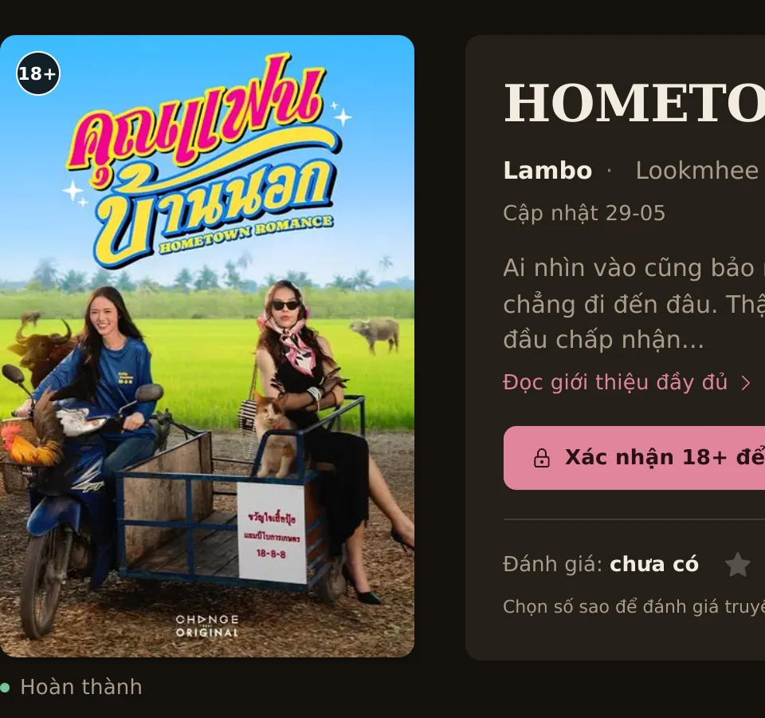
Bản cũ nhồi 5 thứ vào một hàng 15px: tác giả · couple · năm · số chương · “cập nhật 29-05”. Bản mới tách làm hai tầng: hàng 15px chỉ để nhận ra bộ truyện, hàng 13px cho phần phụ.
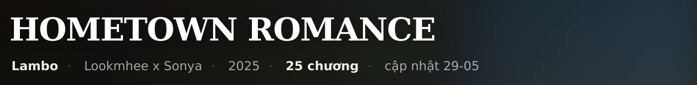
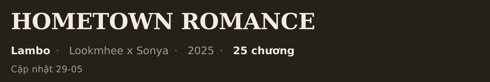
Bản cũ đặt ngay dưới tên, chen giữa phần giới thiệu và nút đọc — mắt bị cắt nhịp đúng lúc cần đọc tiếp. Bản mới đẩy xuống dưới cùng, ngăn bằng một đường mảnh.
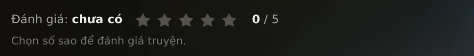
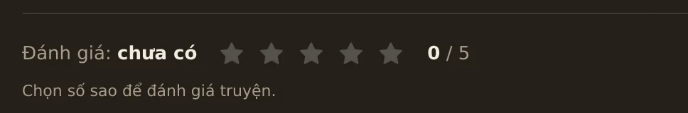
Bản cũ: 4 nút cùng cỡ (Xác nhận 18+ · Theo dõi · Tủ truyện · Chia sẻ) và một icon chia sẻ
nằm lẻ tít bên phải — icon đó ở ngoài khung cắt này, xem ảnh toàn cảnh phía trên; trên mobile thành 4 hàng nút. Bản mới: một CTA chính, một nút theo dõi,
phần còn lại vào menu ⋯.
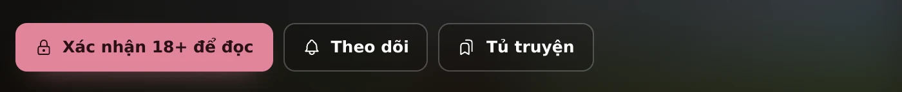
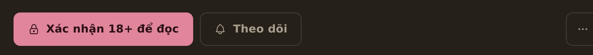
⋯ có Chương mới nhất · Tủ truyện · Chia sẻ · RSS bộ này · Đặt lại xác nhận 18+.rgba(224,133,155,.4) (2.12:1) sang son đặc có khe nền → 6.14:1, đạt WCAG 1.4.11.Bản cũ là một nhãn chữ IN HOA kiểu mono, dán đè lên đáy bìa kèm chấm phát sáng. Bản mới hạ nó thành chú thích 13px ngay dưới bìa — cùng thông tin, không đè lên ảnh.
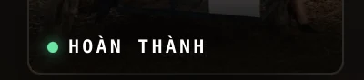
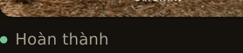
Bản cũ: bìa 132px chen cạnh tiêu đề, rồi 4 hàng nút. Bản mới: một cột — bìa, tên, thông tin, tóm tắt, CTA, rồi mới tới đánh giá. Cùng cấu trúc với desktop, chỉ thu nhỏ.
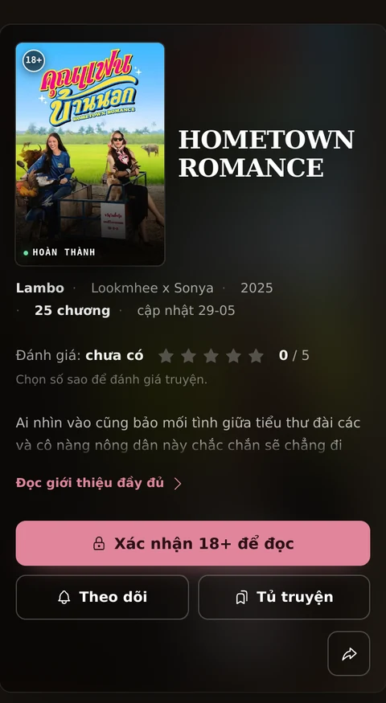
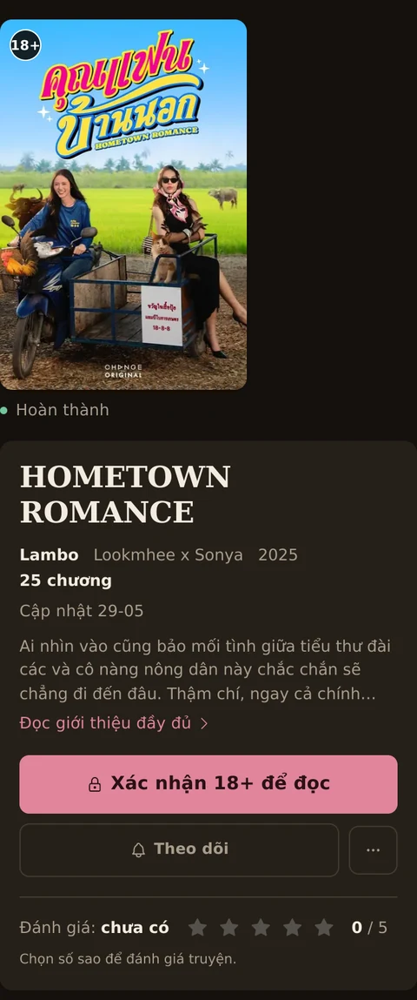
| Hạng mục | Trước | Sau |
|---|---|---|
| Bìa (desktop) | 172px, chữ đè lên nền ảnh | 260px, cột riêng, giữ 2:3 |
| Số bậc cỡ chữ trong hero | 6 bậc (11–13.5px) | 4 bậc (32 / 15 / 13 / 11) |
| Nút ở hàng chính | 4 nút + 1 icon rời | 3: CTA · Theo dõi · ⋯ |
| Tương phản chữ phụ trên hero | 1.54:1 | 13.6:1 |
| Tương phản focus ring | 2.12:1 | 6.14:1 |
| Cuộn ngang ở màn 800px | 1076px (tràn) | không tràn |
| Đáy hero (desktop) | 440px | 450px |
--acc, chữ --txt